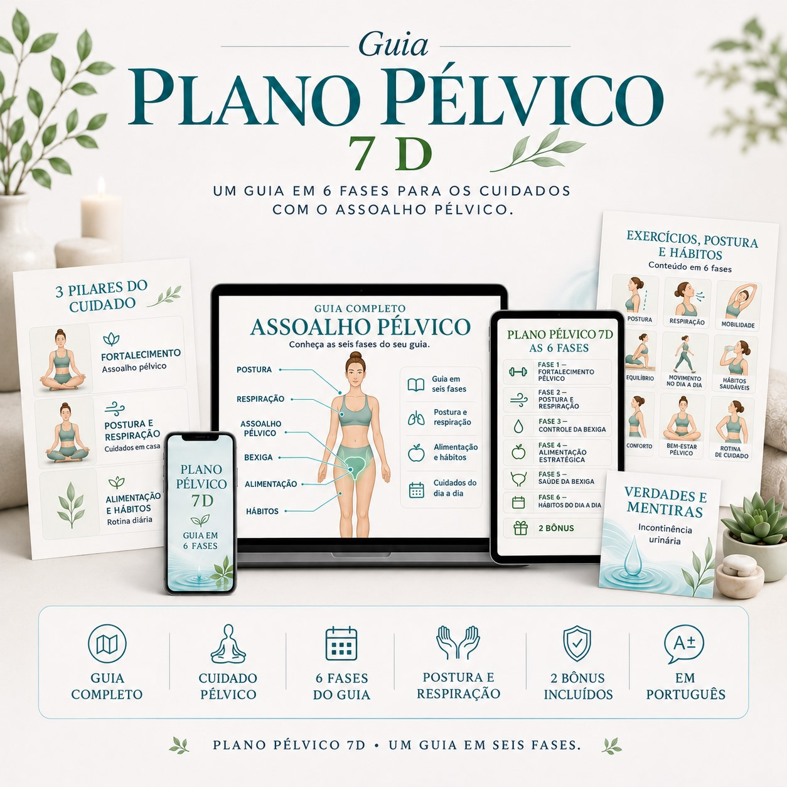

01
Fortalecimento pélvico
Fase 1: Exercícios exclusivos para fortalecer o assoalho pélvico e recuperar o controle do xixi.

PLANO PÉLVICO 7D · GUIA EM 6 FASES
Existe um protocolo de 6 fases, validado por uma das maiores autoridades dos Estados Unidos, que já ajudou mais de 13.287 mulheres acima dos 30 anos.
ou 6x de R$ 4,98
O QUE ESTÁ INCLUÍDO
Fase 1: Exercícios exclusivos para fortalecer o assoalho pélvico e recuperar o controle do xixi.
Fase 2: Exercícios em casa para ajustar a postura e a respiração com o diafragma, reduzindo a pressão sobre a bexiga.
Fase 3: Treinamento de controle da bexiga para resistir mais tempo e não correr ao banheiro a todo instante.
Fase 4: Alimentação estratégica para reduzir peso, acabar com prisão de ventre e aliviar a pressão na bexiga.
Fase 5: Alimentos que aumentam naturalmente o estrogênio e ajudam a manter bexiga e uretra saudáveis.
Fase 6: Técnicas práticas do dia a dia para reduzir a frequência urinária e recuperar o controle.
Fortalecimento pélvico
Postura e respiração
Controle da bexiga
Alimentação estratégica
Saúde da bexiga e uretra
Hábitos do dia a dia
TALVEZ VOCÊ SE IDENTIFIQUE
Eu sei exatamente o que você está sentindo.
Porque eu já passei por isso.
Aquele escape quando você ri.
Quando espirra na rua.
Quando corre para o banheiro e não chega a tempo.
E o pior: a sensação de que ninguém fala sobre isso.
A maioria dos conteúdos na internet é superficial. Não oferece um plano prático para acabar com o problema de vez.
Talvez você já tenha:
❌ Deixado de usar suas roupas favoritas
❌ Evitado sair com as amigas por vergonha
❌ Sentido constrangimento no trabalho
❌ Medo constante de vazar em público
❌ A sensação de não estar no controle do próprio corpo
Existe uma saída.
E ela não envolve remédios, fraldas ou cirurgias perigosas.
Ilustração conceitual
ENTENDA O MÉTODO
Como sou professora de inglês, comecei a buscar informações em artigos científicos americanos.
Foi quando encontrei a pesquisa da Dra. Carolyn Swenson, ginecologista e pesquisadora da Universidade de Michigan.
O assoalho pélvico é um grupo de músculos que sustenta os órgãos abdominais e pélvicos.
Quando esses músculos estão fracos, a urina escapa involuntariamente.
Mas aqui está o ponto que quase ninguém explica:
Exercícios para fortalecer essa musculatura são apenas o primeiro passo.
A Dra. Swenson mostra que outros fatores também enfraquecem a musculatura pélvica:
Não adianta tratar o vazamento apenas com exercícios.
É preciso eliminar a causa raiz.
Incontinência urinária é a incapacidade de conter a urina — seja rindo, correndo ou não conseguindo chegar ao banheiro a tempo.
Mesmo que tenha acontecido apenas uma vez, isso já é considerado incontinência.
E precisa ser tratado o quanto antes, para não se agravar.
📊 1 em cada 3 mulheres acima dos 35 anos sofre com isso
📊 Quase metade das mulheres acima dos 50 anos também enfrenta
📊 Mais de 13.287 mulheres já foram ajudadas pelo método
UMA NOVA POSSIBILIDADE
Fechar esta página e continuar com medo de vazar em público.
Com receio de usar as roupas que gosta.
Com vergonha.
Com insegurança.
Sem controle do próprio corpo.
Dar uma chance a você mesma.
Aproveitar um método comprovado, testado e que pode mudar sua vida em até 14 dias.
Você prefere continuar evitando o vestido justo, a calça clara ou o shortinho do verão?
Ou voltar a usar o que quiser, sair em paz e viver com liberdade e autoestima?
CUIDADOS QUE SE COMPLEMENTAM
Fase 1
Fase 1: Exercícios exclusivos para fortalecer o assoalho pélvico e recuperar o controle do xixi.
Fase 2
Fase 2: Exercícios em casa para ajustar a postura e a respiração com o diafragma, reduzindo a pressão sobre a bexiga.
Fases 4, 5 e 6
Fase 4: Alimentação estratégica para reduzir peso, acabar com prisão de ventre e aliviar a pressão na bexiga.
PASSO A PASSO
Conheça os temas que compõem o guia.
Exercícios exclusivos para fortalecer o assoalho pélvico e recuperar o controle do xixi.
Exercícios em casa para ajustar a postura e a respiração com o diafragma, reduzindo a pressão sobre a bexiga.
Treinamento de controle da bexiga para resistir mais tempo e não correr ao banheiro a todo instante.
Alimentação estratégica para reduzir peso, acabar com prisão de ventre e aliviar a pressão na bexiga.
Alimentos que aumentam naturalmente o estrogênio e ajudam a manter bexiga e uretra saudáveis.
Técnicas práticas do dia a dia para reduzir a frequência urinária e recuperar o controle.
PARA ACOMPANHAR O SEU GUIA
🎁 Bônus 1: Guia com Verdades e Mentiras sobre Incontinência Urinária
🎁 Bônus 2: Grupo exclusivo no WhatsApp com dicas de saúde da mulher e suporte contínuo
Imagens e mockups são representações ilustrativas.
OLHE ALÉM DOS PRODUTOS
As empresas nunca vão te contar tudo o que você precisa saber para acabar com a incontinência urinária.
Elas preferem vender:
Fraldas
Absorventes
Pílulas
Roupas íntimas especiais
Cirurgias de R$30.000
Tudo para garantir que você continue consumindo mês após mês.
Enquanto isso, você continua:
Gastando dinheiro com produtos que não resolvem
Sentindo vergonha
Evitando situações sociais
Sem controle sobre o próprio corpo
Foi por isso que a Dra. Caroline Swenson criou, nos Estados Unidos, um guia completo que resolve todos os pilares da incontinência urinária…
…e o melhor: em apenas 14 dias.
👉 Quero ver as 6 fases do guiaO DIFERENCIAL DO GUIA
Porque é diferente de tudo o que você já viu:
Esse guia atua diretamente em todas as causas reais da incontinência urinária.
Com um protocolo testado e validado cientificamente, em 6 fases bem definidas.
Material educativo. Não substitui avaliação, diagnóstico ou acompanhamento de um profissional de saúde. Resultados individuais podem variar.
SEU GUIA COMPLETO
Nos Estados Unidos, foi vendido por US$97 — mais de R$900.
Consegui liberar para as brasileiras por R$450.
Mas insisti para fazer algo realmente grande no Brasil.
E consegui uma condição inédita:
Apenas R$ 29,90
ou 6x de R$ 4,98
Essa condição é válida somente para as primeiras 100 mulheres.
Depois disso, o valor retorna para R$450.
Se você está vendo esta página agora, ainda restam algumas vagas.
Você tem 7 dias completos para acessar o guia, aplicar as técnicas e avaliar com calma.
Se não gostar, é só enviar um e-mail para o suporte.
Devolvemos 100% do seu investimento, sem letras miúdas, sem perguntas, sem enrolação.
HISTÓRIAS COMPARTILHADAS
Esse guia é dividido em 6 fases, e foi graças a ele que eu me livrei desse problema de uma vez por todas.
Nunca mais passei pela humilhação de me urinar ao rir, espirrar ou fazer esforço.
Compartilhei com três amigas acima dos 40 anos. Todas ficaram impressionadas com os resultados.
Demorei 29 dias para traduzir tudo e entregar o material para elas testarem.
Veja o que aconteceu:
“No trabalho, na rua, em qualquer lugar, é extremamente constrangedor. Eu não tinha mais controle. Me livrei da incontinência mais rápido do que imaginava, e sem aqueles remédios terríveis. Hoje, sou outra pessoa.”
“O maior constrangimento da minha vida foi na casa do meu namorado. Urinei na mesa de jantar. Depois disso, busquei tratamento. Hoje tenho controle total sobre a minha bexiga.”
“Tomava muitos remédios, tentando de tudo. Experimentei o guia e ele resolveu o meu problema de gotejamento.”
Segundo o IBOPE, cerca de 58% das brasileiras já sofreram escapes de urina.
A Dra. Caroline pediu que eu aplicasse o guia em 100 mulheres acima dos 40 anos no Brasil antes de liberar por aqui.
Ou seja: funcionou perfeitamente com mulheres reais, como eu e você.
Somando com as mais de 13.287 mulheres nos Estados Unidos, fica claro que esse método funciona.
DÚVIDAS FREQUENTES
É o guia apresentado nesta página, organizado em seis fases que abordam fortalecimento do assoalho pélvico, postura, respiração, controle da bexiga, alimentação e hábitos do dia a dia.
O guia de seis fases e os dois bônus descritos nesta página: o Guia com Verdades e Mentiras sobre Incontinência Urinária e o grupo exclusivo no WhatsApp.
O valor apresentado é R$ 29,90 ou 6x de R$ 4,98.
Sim. As seis fases estão descritas nas seções “As 6 Fases do Guia” e “As seis fases, em uma sequência.” desta página.
A garantia informada é de 7 dias. Se não gostar, a solicitação de devolução deve ser enviada ao suporte, conforme descrito na seção de garantia.
Não. O conteúdo é educativo e não substitui consulta, avaliação, diagnóstico ou acompanhamento de um profissional de saúde.
Não é possível garantir um resultado individual. As experiências podem variar conforme as condições e a situação de cada pessoa.
Os dois bônus estão apresentados na seção “Você também recebe 2 bônus”, acima da oferta.
PLANO PÉLVICO 7D
Eu abri a porta. Só você pode atravessá-la.
Espero de verdade que você tome a melhor decisão da sua vida.
ou 6x de R$ 4,98
Você economiza mais de R$760 e investe apenas 99 centavos por dia.
Clique no botão abaixo e garanta sua vaga antes que as últimas se esgotem.
Fica com Deus. 🙏